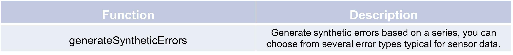

Synthetic error generation methods
Error generation
This example illustrates how to generate synthetic errors using the generateSyntheticErrors function from the
preprocessing module. It begins by creating a pandas Series s of 10 random values from a normal distribution and then
introduces “noise” errors to 50% of the data. The final output shows the initial data along with the modified
time series “with_errors” and the corresponding error types, where errors are labeled as “noise.”
The “noise”, “bias”, “drift”, “constant value”, “outlier”, and “missing” errors are available error types. Parameter
adaptions are available for some of the error types.
>>>import numpy as np
>>>num_samples = 10
>>>s = pd.Series(np.random.normal(0, 5, num_samples), name='initial')
>>>s_err, s_errtype = TSCC.preprocessing.generateSyntheticErrors(s, error_type = ["noise"], error_rate = 0.5)
>>>s_err.name = "with_errors"
>>>print(pd.DataFrame([s, s_err]).transpose())
initial with_errors error_type
0 5.083964 10.776748 noise
1 5.518957 6.91386 noise
2 -0.835532 -0.835532
3 -0.182044 -0.182044
4 -4.237007 -4.237007
5 -1.867304 -0.504853 noise
6 0.429116 0.429116
7 1.060643 1.060643
8 -0.209708 -0.209708
9 -2.137849 -2.137849